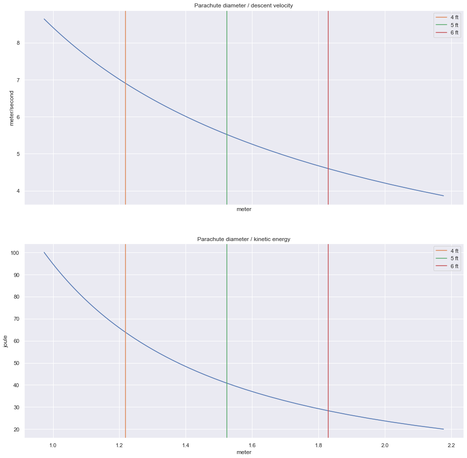

Descent Rate¶
A falling object will accelerate towards the ground until it reaches terminal velocity when the force of gravity is balanced by upwards forces acting on it - namely, the drag force and bouyancy.
For our model, we will assume a zero bouyancy (the balloon has popped) and that the time to reach terminal velocity is negligible.
from preamble import *
Eq(F_d, F_g)
\[\displaystyle F_{d} = F_{g}\]
_.replace(F_d, Rational(1/2) * rho * C_d * A * v**2).replace(F_g, m * g)
\[\displaystyle \frac{A C_{d} \rho v^{2}}{2} = g m\]
_.replace(A, pi * (D/2)**2)
\[\displaystyle \frac{\pi C_{d} D^{2} \rho v^{2}}{8} = g m\]
_.solve(D**2)
\[\displaystyle D^{2} = \frac{8 g m}{\pi C_{d} \rho v^{2}}\]
calc_desired_diameter = lambdify([g,m,C_d,rho,v], sqrt(_.rhs), "numpy")
KE = symbol_table.define('KE', 'Kinetic Energy')
Eq(KE,Rational(1/2) * m * v**2)
\[\displaystyle KE = \frac{m v^{2}}{2}\]
_.solve(v**2)
\[\displaystyle v^{2} = \frac{2 KE}{m}\]
calc_desired_velocity = lambdify([KE,m], sqrt(_.rhs), "numpy")
payload_mass = 1480 * units.g
balloon_mass = 1200 * units.g
total_mass = payload_mass + balloon_mass
kinetic_energy = np.linspace(20,100) * units.J
velocity = calc_desired_velocity(kinetic_energy, total_mass).to_base_units()
g = 9.86 * units.m / (units.s ** 2)
C_d = 0.78
rho = 1.22 * units.kg / (units.m ** 3)
diameter = calc_desired_diameter(g, total_mass, C_d, rho, velocity).to_base_units()
fig, axes = plt.subplots(2,1, sharex=True, figsize=(16,16))
axes[0].plot(diameter, velocity);
axes[0].set_title('Parachute diameter / descent velocity')
axes[1].plot(diameter, kinetic_energy);
axes[1].set_title('Parachute diameter / kinetic energy')
rocketman_chutes = [4,5,6] * units.ft
for ax in axes:
for i, chute in enumerate(rocketman_chutes):
ax.axvline(chute, color=f'C{i+1}', label=f'{chute:~P}')
ax.legend()
